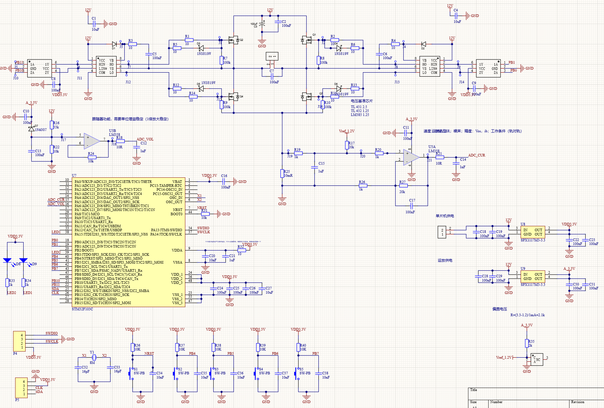
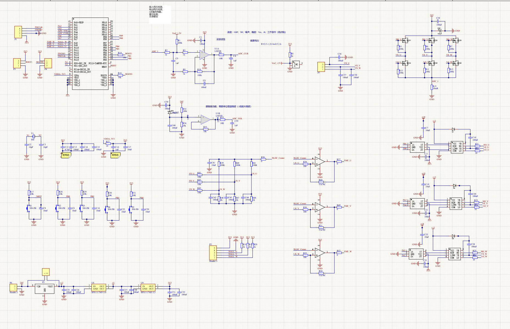

| 项目类型 | 个人实践项目 |
| 技术栈 | STM32F103C8T6, HAL库, Altium Designer, 嘉立创打样 |
| 核心功能 | 有刷/无刷电机驱动、电压电流检测、霍尔/无感驱动、OLED显示 |
| PCB设计 | 自研有刷电机综合PCB + 无刷电机综合PCB，多版迭代 |
本项目从零构建了两套完整的电机控制综合系统，分别对应有刷直流电机和无刷电机。与扫地机器人项目中使用A4950作为主控板上的电机控制模块不同，本项目的两块自研PCB均为独立完整的电机驱动综合系统，每块板不仅实现电机驱动功能，还集成了电压检测、电流检测、OLED实时显示、按键交互、PI闭环控制等多项功能，形成了一个自包含的电机测试与控制平台。项目经历了从面包板原型到多版PCB迭代的完整工程化过程。
有刷电机综合系统和无刷电机综合系统各为一块独立PCB，功能对比如下：
| 功能模块 | 有刷电机PCB | 无刷电机PCB |
|---|---|---|
| 电机驱动 | H桥PWM驱动 | 三相全桥逆变器 |
| 电压检测 | 33k/10k分压ADC采样 | 分压ADC采样 |
| 电流检测 | 0.01Ω采样电阻+运放 | 采样电阻+运放 |
| 位置/速度反馈 | — | 霍尔传感器驱动 |
| 无感驱动 | — | 反电动势过零检测 |
| OLED显示 | SSD1306 128×64 | SSD1306 128×64 |
| 按键交互 | 4路独立按键 | 4路独立按键 |
| LED状态指示 | 2路LED | 2路LED |
| 闭环控制 | PI控制器 | 双环PI（速度+电流） |
| 模块 | 规格 | 引脚 |
|---|---|---|
| MCU | STM32F103C8T6 (72 MHz, Cortex-M3) | — |
| 电机驱动 | H桥MOSFET驱动电路 | — |
| PWM通道1 | TIM2\CH4，2400级分辨率 | PB11 |
| PWM通道2 | TIM3\CH4，2400级分辨率 | PB1 |
| 方向控制 | GPIO高低电平切换H桥 | PB0, PB10 |
| 电压检测 | ADC\CH6, 33k/10k分压, 比值4.3 | PA6 |
| 电流检测 | ADC\CH5, 0.01Ω采样, 运放放大×20 | PA5 |
| OLED显示 | SSD1306 128×64, 软件I2C | PB12/PB13 |
| 按键输入 | 4路独立按键，低电平有效 | PB4–PB7 |
| LED指示 | 2路运行状态指示 | PA15, PB3 |
原理图参数：电压分压 R16=33kΩ, R22=10kΩ；电流检测 Rshunt=0.01Ω, 放大倍数×20：
#define ADC_VREF 3.3f
#define ADC_MAX_COUNTS 4095.0f
#define VOL_RATIO 4.3f // 电压分压比
#define CUR_VREF 1.2f // 电流检测参考电压
#define CUR_GAIN 5.0f // 电流增益 A/V
#define ADC_AVG_N 16 // 平均滤波次数
static void ADC_Read_CurVol_Avg(uint16_t *raw_cur,
uint16_t *raw_vol)
{
uint32_t sum_cur = 0, sum_vol = 0;
for (int n = 0; n < ADC_AVG_N; n++) {
HAL_ADC_Start(&hadc1);
// Rank1 = CH5 = ADC_CUR (PA5)
if (HAL_ADC_PollForConversion(&hadc1, 10) == HAL_OK)
sum_cur += HAL_ADC_GetValue(&hadc1);
// Rank2 = CH6 = ADC_VOL (PA6)
if (HAL_ADC_PollForConversion(&hadc1, 10) == HAL_OK)
sum_vol += HAL_ADC_GetValue(&hadc1);
HAL_ADC_Stop(&hadc1);
}
*raw_cur = (uint16_t)(sum_cur / ADC_AVG_N);
*raw_vol = (uint16_t)(sum_vol / ADC_AVG_N);
}
static void Measure_Update(void) {
ADC_Read_CurVol_Avg(&adc_raw_cur, &adc_raw_vol);
float v_cur = (adc_raw_cur * ADC_VREF) / ADC_MAX_COUNTS;
float v_vol = (adc_raw_vol * ADC_VREF) / ADC_MAX_COUNTS;
meas_voltage_V = v_vol * VOL_RATIO; // 真实电压
meas_current_A = (v_cur - CUR_VREF) * CUR_GAIN; // 真实电流
if (meas_current_A < 0.0f) meas_current_A = 0.0f;
}
采用两路PWM通道交叉控制H桥MOSFET，实现正反转切换：
uint8_t Motor_Dir = 0; // 0=正转, 1=反转
uint16_t Motor_Speed = 1199; // PWM占空比: 0~2399
uint8_t Motor_Speed_Step = 239; // 每次加减速步长(约10%)
void Motor_UpdateOutput(void) {
if (Motor_Dir == 1) { // 正向转
HAL_TIM_PWM_Start(&htim2, TIM_CHANNEL_4);
__HAL_TIM_SET_COMPARE(&htim2, TIM_CHANNEL_4, Motor_Speed);
HAL_GPIO_WritePin(GPIOB, GPIO_PIN_0, GPIO_PIN_RESET);
HAL_TIM_PWM_Stop(&htim3, TIM_CHANNEL_4);
HAL_GPIO_WritePin(GPIOB, GPIO_PIN_10, GPIO_PIN_SET);
// LED指示: 正转亮LED2
HAL_GPIO_WritePin(GPIOA, GPIO_PIN_15, GPIO_PIN_SET);
HAL_GPIO_WritePin(GPIOB, GPIO_PIN_3, GPIO_PIN_RESET);
} else { // 反向转
HAL_TIM_PWM_Stop(&htim2, TIM_CHANNEL_4);
HAL_GPIO_WritePin(GPIOB, GPIO_PIN_0, GPIO_PIN_SET);
HAL_TIM_PWM_Start(&htim3, TIM_CHANNEL_4);
__HAL_TIM_SET_COMPARE(&htim3, TIM_CHANNEL_4, Motor_Speed);
HAL_GPIO_WritePin(GPIOB, GPIO_PIN_10, GPIO_PIN_RESET);
// LED指示: 反转亮LED1
HAL_GPIO_WritePin(GPIOA, GPIO_PIN_15, GPIO_PIN_RESET);
HAL_GPIO_WritePin(GPIOB, GPIO_PIN_3, GPIO_PIN_SET);
}
}
void Motor_Stop(void) {
HAL_TIM_PWM_Stop(&htim2, TIM_CHANNEL_4);
HAL_TIM_PWM_Stop(&htim3, TIM_CHANNEL_4);
HAL_GPIO_WritePin(GPIOB, GPIO_PIN_0, GPIO_PIN_SET);
HAL_GPIO_WritePin(GPIOB, GPIO_PIN_10, GPIO_PIN_SET);
// 全灭LED
HAL_GPIO_WritePin(GPIOA, GPIO_PIN_15, GPIO_PIN_SET);
HAL_GPIO_WritePin(GPIOB, GPIO_PIN_3, GPIO_PIN_SET);
}
4路独立按键实现人机交互控制：
uint8_t Key_Scan(void) {
// KEY1 (PB4): 停止
if (HAL_GPIO_ReadPin(GPIOB, GPIO_PIN_4) == GPIO_PIN_RESET) {
HAL_Delay(10); // 10ms消抖
if (HAL_GPIO_ReadPin(GPIOB, GPIO_PIN_4) == GPIO_PIN_RESET) {
while (HAL_GPIO_ReadPin(GPIOB, GPIO_PIN_4)
== GPIO_PIN_RESET); // 等待释放
return 1;
}
}
// KEY2 (PB5): 方向切换
if (HAL_GPIO_ReadPin(GPIOB, GPIO_PIN_5) == GPIO_PIN_RESET) {
HAL_Delay(10);
if (HAL_GPIO_ReadPin(GPIOB, GPIO_PIN_5) == GPIO_PIN_RESET) {
while (HAL_GPIO_ReadPin(GPIOB, GPIO_PIN_5)
== GPIO_PIN_RESET);
return 2;
}
}
// KEY3 (PB6): 加速 KEY4 (PB7): 减速
// ... 同理实现
return 0;
}
自实现软件I2C协议驱动SSD1306，包含6×8最小字库、帧缓冲区刷新机制：
// 6x8 最小字库: 0-9, D, I, M, P, R, W, V, 空格, 冒号
static const uint8_t font6x8[][6] = {
{0x00,0x00,0x00,0x00,0x00,0x00}, // ' '
{0x00,0x36,0x36,0x00,0x00,0x00}, // ':'
{0x3E,0x45,0x49,0x51,0x3E,0x00}, // '0'
// ... 完整字库定义
};
// 帧缓冲区 128x64/8 = 1024 字节
static uint8_t oled_buf[128 * 64 / 8];
static void OLED_ShowMeas(uint16_t speed, uint8_t dir,
float vin, float ia) {
char line1[24], line2[24], line3[24], line4[24];
int vin_mV = (int)(vin * 1000.0f);
int ia_mA = (int)(ia * 1000.0f);
snprintf(line1, sizeof(line1), "PWM:%4d", speed);
snprintf(line2, sizeof(line2), "DIR:%1d", dir ? 1 : 0);
snprintf(line3, sizeof(line3), "V:%5d", vin_mV);
snprintf(line4, sizeof(line4), "I:%5d", ia_mA);
OLED_Fill(0); // 清屏
OLED_Puts(0, 7, line1); // Page7: PWM值
OLED_Puts(0, 5, line2); // Page5: 方向
OLED_Puts(0, 3, line3); // Page3: 电压(mV)
OLED_Puts(0, 1, line4); // Page1: 电流(mA)
OLED_Update(); // 刷新整个帧缓冲区到屏幕
}
PI控制器基于离散化实现，采样周期 T = 2 ms（500 Hz）：
float Kp = 0.8f;
float T = 0.002f; // 采样周期 2ms = 500Hz
float Ki = Kp / T; // Ki = 400
float Ve, VI = 0.0f, Vpi;
// 在定时器中断中每2ms调用一次
void PI_Control_Update(float Vin, float Vref) {
Ve = Vin - Vref; // 误差 = 实际值 - 目标值
VI += Ki * T * Ve; // 积分项累加
// 积分限幅防止windup
if (VI > PI_MAX) VI = PI_MAX;
if (VI < PI_MIN) VI = PI_MIN;
Vpi = Kp * Ve + VI; // PI输出 = 比例项 + 积分项
}
在有刷电机综合系统基础上，进一步开发了无刷电机综合PCB，该板集成了以下功能模块：


int main(void) {
HAL_Init();
SystemClock_Config(); // 72MHz HSE + PLL
MX_GPIO_Init();
MX_ADC1_Init();
MX_TIM2_Init();
MX_TIM3_Init();
HAL_ADCEx_Calibration_Start(&hadc1); // ADC校准
OLED_Init();
Measure_Update();
OLED_ShowMeas(Motor_Speed, Motor_Dir,
meas_voltage_V, meas_current_A);
while (1) {
Key_status = Key_Scan();
if (Key_status != 0) {
switch (Key_status) {
case 1: Motor_Stop(); break; // 停止
case 2: Motor_Dir = !Motor_Dir; // 换向
Motor_UpdateOutput(); break;
case 3: Motor_Speed += Motor_Speed_Step; // 加速
if (Motor_Speed > 2300) Motor_Speed = 2300;
Motor_UpdateOutput(); break;
case 4: Motor_Speed -= Motor_Speed_Step; // 减速
if (Motor_Speed < 100) Motor_Speed = 100;
Motor_UpdateOutput(); break;
}
OLED_ShowMeas(Motor_Speed, Motor_Dir,
meas_voltage_V, meas_current_A);
}
// 每100ms更新一次电压电流测量值
static uint32_t meas_tick = 0;
if (HAL_GetTick() - meas_tick >= 100) {
meas_tick = HAL_GetTick();
Measure_Update();
OLED_ShowMeas(Motor_Speed, Motor_Dir,
meas_voltage_V, meas_current_A);
}
}
}